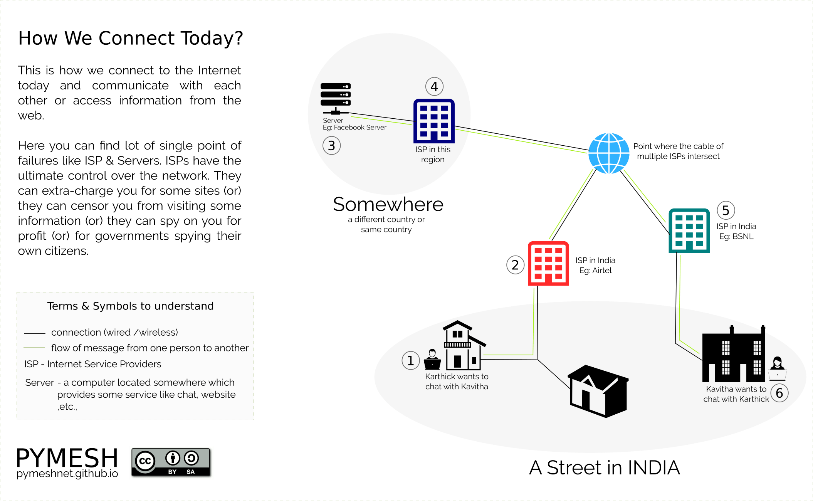

This website is moved here
The need for meshnet arises from understanding how we connect and form the network around us today. Let us try to understand in simple terms.
How do we connect today?
To get connected to Internet today, we go and approach an organization called Internet Service Provider (ISP). In India leading ISPs are,
- BSNL
- Airtel
- ACT Broadband
- List of more ISPs in India can be found here
The ISPs offer us data plans to choose and once we confirm the plan, they will extend a wire (or) cable (if it is a wired broadband connection) or they will setup a wireless transceiver at the top of the building (if it is a wireless connection). Different ISPs have inter-connection between each other, so even if you have a connection from BSNL and if your friend has a connection from Airtel, you both can still communicate. The image below is a representation of this description.
Let us consider a scenario where two persons (Karthick & Kavitha) who live in the same street want to chat with each other and are connected to different ISPs. Let us see what happens when they both use Facebook Messenger or similar application like Whatsapp (or) Telegram to chat. Karthick sends a message to Kavitha.
- Message leaves Karthick's Phone.
- Message reaches Karthick's ISP (Airtel).
- ISP of Karthick (Airtel) finds the route to reach Facebook Messenger server which is located outside the country.
- The Facebook Messenger server now sends the message to it's ISP.
- The ISP of Facebook Messenger finds the location of Kavitha's ISP (BSNL) and passes the message there.
- Kavitha's ISP (BSNL) finally passes the message to Kavitha's Phone that was sent by Karthick.
The above scenario is very well shown in the picture below. Follow the green line to understand how the message flows from one machine to another. In practice, there will be more number of intermediate devices which will also carry the message from one device to another. For simplicity we have just considered the end devices and intermediate servers.
So what is the problem here?
We saw how the message from Karthick reaches Kavitha. Message from Kavitha to Karthick will also flow in similar way. Let us ask ourselves some questions here,
- What will happen if the ISP of Karthick or Kavitha is down?
- What will happen if the Facebook Messenger server is down (i.e server is not running)?
- What if the ISP of Karthick or Kavitha is reading what Karthick and Kavitha are chatting about?
- What if the Server (or) the ISPs are not passing the message to others?
Two simple observations are made by asking these questions.
- No one connected to the ISP can chat with each other when the ISP or the server is down or if the message is blocked intentionally.
- It is not safe to chat when the ISP or the Facebook server is spying on us, mining for patterns of activity.
If there is one point in the network due to which no one is able to communicate when it goes down is called Single Point of Failure. Here in our case there are two such points. One is ISP and the other is the Facebook server. If the ISP or the server blocks the communication intentionally, we call this Censorship. If the ISP or the server spies on everyone either for-profit (or) on the behalf of the public or private organizations, we call this Mass Surveillance.
Note: We have chosen Facebook Messenger for demonstration purpose. The problems identified above are applicable not only for Facebook Messenger, but for every applications that works in a similar way.
Initially while explaining the above scenario, in place of Facebook Messenger, we had Whatsapp Messenger. Now since Whatsapp has implemented end-to-end encryption on their latest clients, the problem of spying their users has been eliminated and so we thought, we should not be using whatsapp as example. But remember, still the problem of centralized server and so the single point of failure for whatsapp is still there.
What is the way forward?
The above problems identified are not only serious, but if you ask a Network Engineer, they would explain you how the above problems violate the basic principles of a network. The way forward from here is to connect differently in such a way that there are no single points of failures, to avoid disconnection. No single point of failure also means no single point of control and thus no censorship. Surveillance is still a problem, but it cannot happen at the same scale as before. In order to prevent mass surveillance, all applications on the network should adopt encryption and decryption techniques, thus messages can be understood only by sender and the receiver.
How should we connect?
We now know that Single Points of Failure and Control are bad and we should get rid of that. The question now is How are we going to do that? Here is what we propose.
Today, almost all the households who have Internet connection also have a Wi-Fi Router (Wi-Fi Modem, as commonly called, though modem and router are different) in our house due to the increased usage of Android Smartphones and laptops. We want our smatphones and laptops to stay connected to Internet through this Wi-Fi Router / Modem. The Internet Service Provider extends a wire (or) cable to our house which is plugged into the Wi-Fi Router / Modem.
Our neighbors also have the same setup. When we switch on the Wi-Fi in our phone (or) laptop we not only see the Wi-Fi signal from our Wi-Fi Modem, but also from our neighbours. Which means we can connect to any device in our range. What is preventing us from connecting to their devices or them connecting to our devices, is password protection. The reason that we set a password to our wireless network is because it is connected to the internet via an ISP and the ISP is charging us for their service and also limiting the bandwidth (It's called as Fair Usage Policy). For example, you may be charged Rs. 1000/- monthly on a Internet connection provided by BSNL and the FUP is 2 mbps speed upto the usage of 8GB per month and 512 kbps for the rest of the month beyond 8GB and so we put a password on our wireless network to enjoy the high speed.
It is quite natural that we put a password when the ISP puts a limitation already. Instead of co-operating with each other, we are said to stay away from our neighbours in this case. Co-operate with neigbours? But how? When a smartphone with Wi-Fi and a Modem with Wi-Fi can connect to each other, so can two modems with Wi-Fi. Wi-Fi devices work in one of the two frequencies 2.4GHZ (or) 5GHZ. The idea here is to form a peer-to-peer wireless network with routers. Our neighbours are our peers. We call such a network Wireless Mesh Network. In a peer-to-peer network (P2P), not every device will connect to a single central point, instead there will be multiple links between devices and the data from one device can travel through multiple paths to reach another device with the help of peers in between.
Now take a look at the following image and see how Karthick and Kavitha could chat with each other on a mesh network. The idea behind mesh network is that ultimately the people and the community that form the mesh network are self-empowered instead of relying on some third-parties. Even without Internet, people could still communicate with each other. With applications like Serval Mesh, people could make free phone calls, send free messages, share files to their neigbours / friends through mesh network, a local copy of Wikipedia can be setup and used without Internet, there are lot more to do on a mesh network.